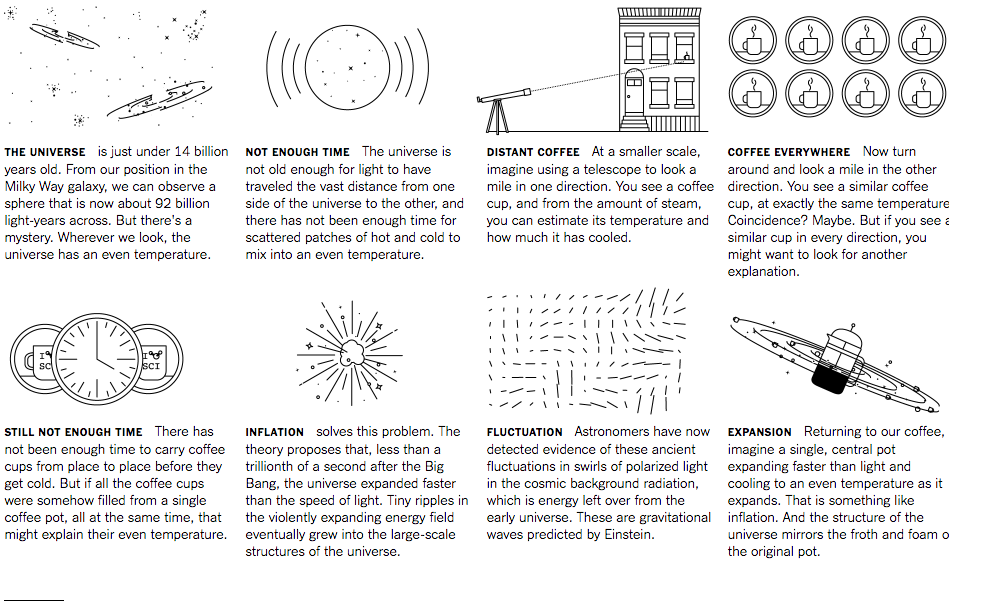

Alan Guth was one of the first physicists to hypothesize the existence
of inflation, which explains how the universe expanded so
uniformly and so quickly in the instant after the Big Bang 13.8 billion
years ago.
Rick Friedman for The New York Times
CAMBRIDGE, Mass. — One night late in 1979, an itinerant young physicist
named Alan Guth, with a new son and a year’s appointment at Stanford,
stayed up late with his notebook and equations, venturing far beyond the
world of known physics.
He was trying to understand why there was no trace of some exotic
particles that should have been created in the Big Bang. Instead he
discovered what might have made the universe bang to begin with. A
potential hitch in the presumed course of cosmic evolution could have
infused space itself with a special energy that exerted a repulsive
force, causing the universe to swell faster than the speed of light for
a prodigiously violent instant.
If true, the rapid engorgement would solve paradoxes like why the
heavens look uniform from pole to pole and not like a jagged, warped
mess. The enormous ballooning would iron out all the wrinkles and
irregularities. Those particles were not missing, but would be diluted
beyond detection, like spit in the ocean.
“SPECTACULAR REALIZATION,” Dr. Guth wrote across the top of the page and
drew a double box around it.
On Monday, Dr. Guth’s starship came in. Radio astronomers reported that
they had seen the beginning of the Big Bang, and that his hypothesis,
known undramatically as inflation, looked right.
Reaching back across 13.8 billion years to
the first sliver of cosmic time with telescopes at the
South Pole, a team of astronomers led by John M. Kovac of the
Harvard-Smithsonian Center for Astrophysics detected ripples in the
fabric of space-time — so-called gravitational waves — the
signature of a universe being wrenched violently apart when it was
roughly a trillionth of a trillionth of a trillionth of a second old.
They are the long-sought smoking-gun evidence of inflation, proof, Dr.
Kovac and his colleagues say, that Dr. Guth was correct.
Inflation has been the workhorse of cosmology for 35 years, though many,
including Dr. Guth, wondered whether it could ever be proved.
If corroborated, Dr. Kovac’s work will stand as a landmark in science
comparable to the recent discovery of dark energy pushing the universe
apart, or of the Big Bang itself. It would open vast realms of time and
space and energy to science and speculation.
Confirming inflation would mean that the universe we see, extending 14
billion light-years in space with its hundreds of billions of galaxies,
is only an infinitesimal patch in a larger cosmos whose extent,
architecture and fate are unknowable. Moreover, beyond our own universe
there might be an endless number of other universes bubbling into frothy
eternity, like a pot of pasta water boiling over.
‘As Big as It Gets’
In our own universe, it would serve as a window into the forces
operating at energies forever beyond the reach of particle accelerators
on Earth and yield new insights into gravity itself. Dr. Kovac’s ripples
would be the first direct observation of gravitational waves, which,
according to Einstein’s theory of general relativity, should ruffle
space-time.
Marc Kamionkowski of Johns Hopkins University, an early-universe expert
who was not part of the team, said, “This is huge, as big as it
gets.”
He continued, “This is a signal from the very earliest universe, sending
a telegram encoded in gravitational waves.”
The ripples manifested themselves as faint spiral patterns in a bath of
microwave radiation that permeates space and preserves a picture of the
universe when it was 380,000 years old and as hot as the surface of the
sun.
Dr. Kovac and his collaborators, working in an experiment known as
Bicep, for Background Imaging of Cosmic Extragalactic Polarization,
reported their results in a scientific briefing at the Center for
Astrophysics here on Monday and in a set of papers submitted to The
Astrophysical Journal.
The Theory of Inflation
Astronomers have found evidence to support the theory of inflation,
which explains how the universe expanded so uniformly and so quickly in
the instant after the Big Bang 13.8 billion years ago.

By LARRY BUCHANAN and JONATHAN CORUM
Dr. Kovac said the chance that the results were a fluke was only one in
10 million. Dr. Guth, now 67, pronounced himself “bowled over,” saying
he had not expected such a definite confirmation in his lifetime.
“With nature, you have to be lucky,” he said. “Apparently we have been
lucky.”
The results are the closely guarded distillation of three years’ worth
of observations and analysis. Eschewing email for fear of a leak, Dr.
Kovac personally delivered drafts of his work to a select few, meeting
with Dr. Guth, who is now a professor at Massachusetts Institute of
Technology (as is his son, Larry, who was sleeping that night in 1979),
in his office last week.
“It was a very special moment, and one we took very seriously as
scientists,” said Dr. Kovac, who chose his words as carefully as he
tended his radio telescopes.
Andrei Linde of Stanford, a prolific theorist who first described the
most popular variant of inflation, known as chaotic inflation, in 1983,
was about to go on vacation in the Caribbean last week when Chao-Lin
Kuo, a Stanford colleague and a member of Dr. Kovac’s team,
knocked on his door with a bottle of Champagne to tell
him the news.
Stanford Professor Andrei Linde celebrates physics breakthroughCredit
Video by StanfordUniversity
Confused, Dr. Linde called out to his wife, asking if she had ordered
anything.
“And then I told him that in the beginning we thought that this was a
delivery but we did not think that we ordered anything, but I simply
forgot that actually I did order it, 30 years ago,” Dr. Linde wrote in
an email.
Calling from Bonaire, the Dutch Caribbean island, Dr. Linde said he was
still hyperventilating. “Having news like this is the best way of
spoiling a vacation,” he said.
By last weekend, as social media was buzzing with rumors that inflation
had been seen and news spread, astrophysicists responded with a mixture
of jubilation and caution.
Max Tegmark, a cosmologist at M.I.T., wrote in an email, “I think that
if this stays true, it will go down as one of the greatest discoveries
in the history of science.”
John E. Carlstrom of the University of Chicago, Dr. Kovac’s mentor and
head of a competing project called the South Pole Telescope, pronounced
himself deeply impressed. “I think the results are beautiful and very
convincing,” he said.
Paul J. Steinhardt of Princeton, author of a competitor to inflation
that posits the clash of a pair of universes as the cause of genesis,
said that if true, the Bicep result would eliminate his model, but he
expressed reservations about inflation.
Lawrence M. Krauss of Arizona State and others also emphasized the need
for confirmation, noting that the new results exceeded earlier estimates
based on temperature maps of the cosmic background by the European Space
Agency’s Planck satellite and other assumptions about the universe.
“So we will need to wait and see before we jump up and down,” Dr. Krauss
said.
Corroboration might not be long in coming. The Planck spacecraft will
report its own findings this year. At least a dozen other teams are
trying similar measurements from balloons, mountaintops and space.
Spirals in the Sky
Gravity waves are the latest and deepest secret yet pried out of the
cosmic microwaves, which were discovered accidentally by Arno Penzias
and Robert Wilson at Bell Labs 50 years ago. They won the Nobel
Prize.
Dr. Kovac has spent his career trying to read the secrets of these
waves. He is one of four leaders of Bicep, which has operated a series
of increasingly sensitive radio telescopes at the South Pole, where the
thin, dry air creates ideal observing conditions. The others are Clement
Pryke of the University of Minnesota, Jamie Bock of the California
Institute of Technology and Dr. Kuo of Stanford.
“The South Pole is the closest you can get to space and still be on the
ground,” Dr. Kovac said. He has been there 23 times, he said, wintering
over in 1994. “I’ve been hooked ever since,” he said.
The Bicep2 telescope, in the foreground, was used to detect the faint
spiraling gravity patterns — the signature of a universe being wrenched
violently apart at its birth.Steffen Richter/Associated Press
In 2002, he was part of a team that discovered that the microwave
radiation was polarized, meaning the light waves had a slight preference
to vibrate in one direction rather than another.
This was a step toward the ultimate goal of detecting the gravitational
waves from inflation. Such waves, squeezing space in one direction and
stretching it in another as they go by, would twist the direction of
polarization of the microwaves, theorists said. As a result, maps of the
polarization in the sky should have little arrows going in spirals.
Detecting those spirals required measuring infinitesimally small
differences in the temperature of the microwaves. The group’s telescope,
Bicep2, is basically a giant superconducting thermometer.
“We had no expectations what we would see,” Dr. Kovac said.
The strength of the signal surprised the researchers, and they spent a
year burning up time on a Harvard supercomputer, making sure they had
things right and worrying that competitors might beat them to the
breakthrough.
A Special Time
The data traced the onset of inflation to a time that physicists like
Dr. Guth, staying up late in his Palo Alto house 35 years ago, suspected
was a special break point in the evolution of the universe.
Physicists recognize four forces at work in the world today: gravity,
electromagnetism, and strong and weak nuclear forces. But they have long
suspected that those are simply different manifestations of a single
unified force that ruled the universe in its earliest, hottest
moments.
As the universe cooled, according to this theory, there was a fall from
grace, like some old folk mythology of gods or brothers falling out with
each other. The laws of physics evolved, with one force after another
splitting away.
That was where Dr. Guth came in.
Under some circumstances, a glass of water can stay liquid as the
temperature falls below 32 degrees, until it is disturbed, at which
point it will rapidly freeze, releasing latent heat.
Similarly, the universe could “supercool” and stay in a unified state
too long. In that case, space itself would become imbued with a
mysterious latent energy. Inserted into Einstein’s equations, the latent
energy would act as a kind of antigravity, and the universe would blow
itself up. Since it was space itself supplying the repulsive force, the
more space was created, the harder it pushed apart.
What would become our observable universe mushroomed in size at least a
trillion trillionfold — from a submicroscopic speck of primordial energy
to the size of a grapefruit — in less than a cosmic eye-blink.
Almost as quickly, this pulse would subside, relaxing into ordinary
particles and radiation. All of normal cosmic history was still ahead,
resulting in today’s observable universe, a patch of sky and stars
billions of light-years across. “It’s often said that there is no such
thing as a free lunch,” Dr. Guth likes to say, “but the universe might
be the ultimate free lunch.”
Make that free lunches. Most of the hundred or so models resulting from
Dr. Guth’s original vision suggest that inflation, once started, is
eternal. Even as our own universe settled down to a comfortable homey
expansion, the rest of the cosmos will continue blowing up, spinning off
other bubbles endlessly, a concept known as the multiverse.
So the future of the cosmos is perhaps bright and fecund, but do not
bother asking about going any deeper into the past.
We might never know what happened before inflation, at the very
beginning, because inflation erases everything that came before it. All
the chaos and randomness of the primordial moment are swept away,
forever out of our view.
“If you trace your cosmic roots,” said Abraham Loeb, a
Harvard-Smithsonian astronomer who was not part of the team, “you wind
up at inflation.”
A version of this article appears in print on March 18, 2014, Section A,
Page 1 of the New York edition with the headline: Space Ripples Reveal
Big Bang’s Smoking Gun.
Order Reprints |Today’s Paper |Subscribe
Sign up for Science Times
Get stories that capture the wonders of nature, the cosmos and the human
body.